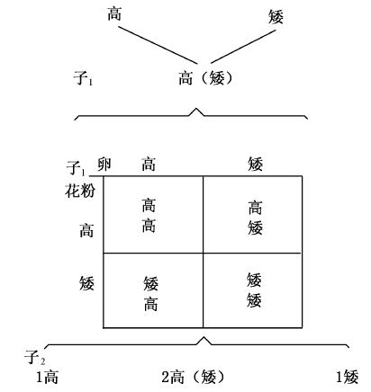
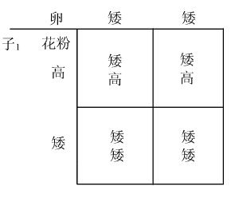
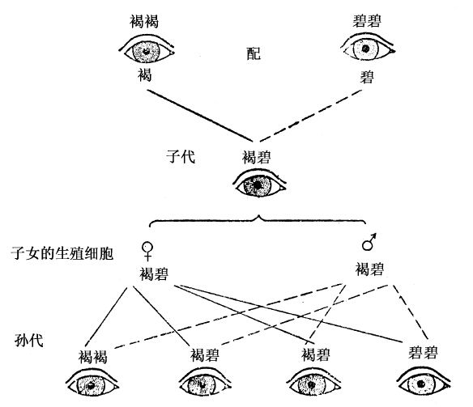
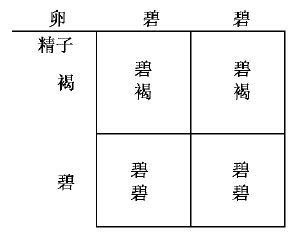
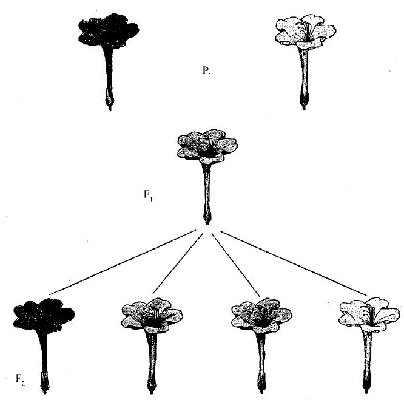
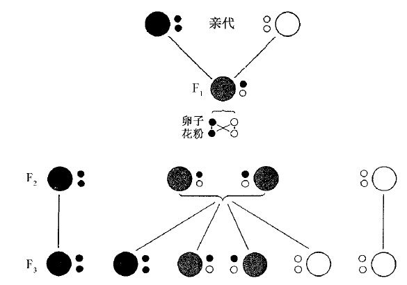
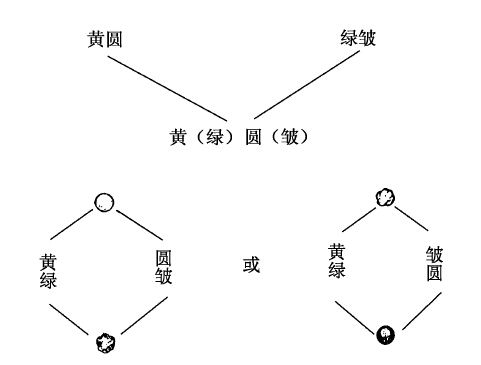
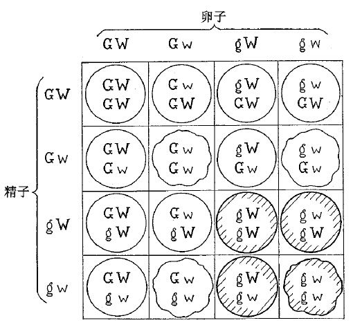

孟德尔的两条定律
孟德尔的功绩在于发现了两条遗传基本定律，从而奠定了现代遗传理论的基础。20世纪以来，其他学者继续研究，使我们向同一方向更加深入，并使现代理论有可能在更广泛的基础上更趋完善。以下举出几个熟知的例子，来说明孟德尔的发现。
孟德尔用食用豌豆的高株品种同矮株品种杂交。子代杂种即子 1 （注：子1（F1），读作“杂交一代”，代表子代；子2（F2）读作“杂交二代”，代表孙代；由此类推。亲（P）代表亲代：P1代表父母一代，P2代表祖父母一代。——译者注。），都是高株（图1）。再使子代自花受精，孙代分高株和矮株，两类的株数成3与1之比。如果高株品种的生殖细胞含有促成高株的某种东西，而矮珠品种的生殖细胞含有促成矮株的某种东西，那么，杂种便应该具备这两种东西。现在，杂种既然是高株，由此可知两种东西会合时高者是显性，而矮者是隐性。

图1 高株品种同矮株品种杂交，产生第一代（子 1 ）的高株杂种，即高（矮）。杂交一代的配子（卵和花粉粒）重新组合，如各方格所示。结果产生了孙代或杂交二代（子 2 ）的三高株和一矮株
孟德尔指出，用一个很简单的假说便可以解释第二代中3比1的现象。当卵子和花粉粒成熟时，如果促成高株的某种东西，同促成矮株的某种东西（两者在杂种内同时存在），彼此分离，那么，就会有半数的卵子含高要素，半数的卵子含矮要素（图1）。花粉粒也是如此。两种卵子同两种花粉粒都以同等的机会受精，平均会得到三高株和一矮株的比例，这是因为要素高同高会合，会产生高株；高同矮会合，产生高株；矮同高会合，产生高株；而矮与矮会合，则产生矮株。

图2 子 1 杂种的高（矮）豌豆与亲本隐性型（矮）回交，产生高株和矮株两型，各占一半
孟德尔采用一个简单的方法来测验他的假说：让杂种回交（注：回交或返交（Back cross），就是把表面上显性的个体回头来同其隐性亲型个体交配的过程，目的在于揭露前者究竟是纯显性或者只是杂种。——译者注。）隐性型，杂种的生殖细胞如果分高矮两型，那么，子代植物也应分高矮两型，各占半数（图2）。实验结果，恰如所料。
人眼红彩颜色的遗传也可以说明高豆和矮豆之间的关系。碧眼人同碧眼人婚配，得碧眼子代。褐眼人同褐眼人婚配，如果两者的祖先都是褐眼，也只能产生褐眼子代。如果碧眼人同纯种褐眼人婚配，子女也都是褐眼（图3）。这一类褐眼的男女如果彼此婚配，其子女会是褐眼和碧眼，成3与1之比。

图3 人类褐眼（褐褐）与碧眼（碧碧）的遗传

图4 子 1 褐眼人（含碧的杂种）回交隐性型碧眼人，产生褐眼和碧眼两型，为数各半
如果杂种褐眼人（子 1 褐碧）同碧眼人婚配，所生子女会一半是褐眼，另一半是碧眼（图4）。
另一些杂交也许更能说明孟德尔的第一定律。譬如：红花紫茉莉同白花紫茉莉杂交，杂种都开桃色花（图5）。如果桃色花杂种植株自花受精，则杂交二代中，会有些开红花，像祖代的红花植株；有些开桃色花，和杂种相同；也有些开白花，像祖代的白花植株：三者互成1∶2∶1之比。在本例中，两个红花的生殖细胞结合，恢复原有的一种亲株花色；两个白花的结合，恢复另一种亲株花色；而红花的同白花的结合，或白花的同红花的结合，便会出现杂种的组合。总计第二代全体有色花植株和白花植株之比为3∶1。

图5 红花紫茉莉同白花紫茉莉杂交，产生杂交一代的桃色以及杂交二代的1红色、2桃色、1白色
这里应该注意两件事：因为杂交二代（子 2 ）的红花个体和白花个体分别含有两个红色要素或两个白色要素（图6），预料应产生红花或白花后代；至于杂交二代的桃色个体因为含有红白两种要素，每种一半（图6），和第一代杂种相同，所以不会产生桃色后代。检查结果，完全证实了预测。

图6 示图5红花与白花两种紫茉莉杂交中生殖细胞的沿革。小黑圈代表生红花的基因，小白圈代表生白花的基因
以上所有结果仅仅证明在杂种的生殖细胞中，从父方传来的某种东西同从母方传来的某种东西彼此分离。单就这一项证据来说，这些结果也可以解释为红花植株或白花植株的全部性状都是作为一个整体遗传给后代的。
但是另一个实验进一步阐明了这一问题。孟德尔用结黄色圆形种子的豌豆植株同结绿色皱形种子的豌豆植株杂交。从另外的杂交里已经知道黄和绿是一对相对性状，他们在第二代中成3与1之比，圆和皱则构成另一对相对性状。在实验中，子代种子都是黄色圆形（图7）。子代自交，产生黄圆、黄皱、绿圆、绿皱四种个体，互成9∶3∶3∶1的比例。

图7 示黄圆豌豆和绿皱豌豆两对孟德尔式性状的遗传。
图的下部示子 2 四种豌豆，即原有的黄圆和绿皱两型，以及新结合起来的黄皱和绿圆两型
孟德尔指出，如果黄与绿两要素之间的分离以及圆与皱两要素之间的分离，各自独立进行，互不干扰，便能够解释以上的数字结果；杂种的生殖细胞势必分为黄圆、黄皱、绿圆和绿皱四种（图8）。

图8 示子 1 杂种的四种卵子和四种花粉粒互相结合，产生16种子 2 新组合（杂种来自黄圆豌豆同绿皱豌豆的交配）
（图中G＝黄；g＝绿；W＝圆；w＝皱。）
四种胚珠和四种花粉粒如果都有同等的机会受精，那么，就应该有16种组合的可能。已知黄是显性而绿是隐性，圆是显性而皱是隐性，那么，16种组合应该归成四类，互成9∶3∶3∶1之比。
这项实验的结果证明，不可能设想在杂种体内，父方的全部生殖质同母方的全部生殖质分离开来。因为原来联合参加杂交的黄和圆，以后在某些情况下，却分开出现。绿和皱的情况也是如此。
孟德尔又证明，三对甚至四对性状参加杂交时，在杂种的生殖细胞里，一对要素和另一对要素可以自由组合。
不论有多少对性状参加杂交，似乎都有理由应用这项结论。就是说，有多少种可能的性状，生殖质内便会有多少独立的成对要素。以后的研究证明，孟德尔的自由组合（注：孟德尔第二定律称为自由组合或自由分配定律，即两对或两对以上的相对基因，在杂种的配子形成中，一对基因的分离并不影响任何其他各对基因的分离，因此，不同对的基因在配子里可以自由组合。——译者注。）第二定律在应用方面是受到限制的，因为许多要素对与对之间并不能自由组合，原来联合在一起的某些要素在以后世代中仍然表现联合的趋势。这就是连锁。